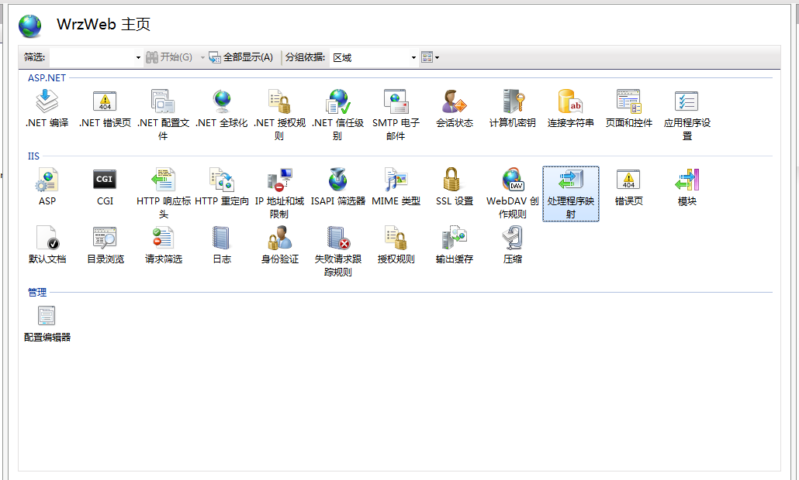
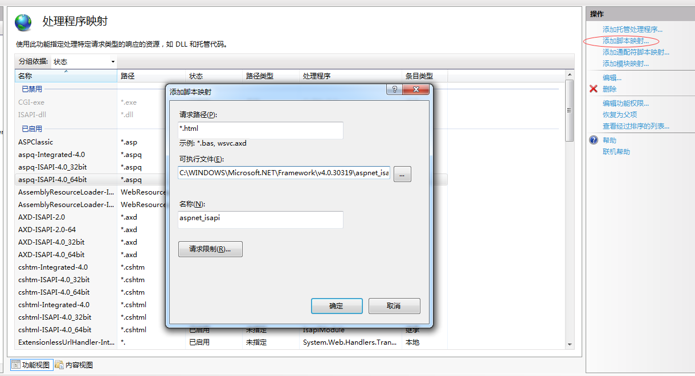

方法一：IIS配置伪静态


方法二:项目配置伪静态
网站配置文件Web.config
<system.webServer>
<handlers>
<add name="html_PageHandlerFactory" path="*.html" verb="*" type="System.Web.UI.PageHandlerFactory" resourceType="Unspecified" preCondition="integratedMode"/>
</handlers>
</system.webServer>
路由配置页面RouteConfig.cs
routes.MapRoute(
"Action1Html", // action伪静态
"{controller}/{action}.html", // 带有参数的 URL
new { controller = "Home", action = "Index", id = UrlParameter.Optional }// 参数默认值
);